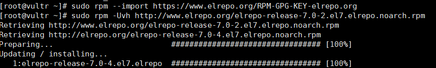

下文皆为本人实验性操作，如参考请自行负法律责任
零、情况简述
- VPS：Vlutr—日本—$5/M—CentOS7 链接
- Xshell 6 下载
- v2rayN 下载（选V2ray-core）
一、开启BBR
（更新内核—>开启BBR）
①更新内核
查看系统现在的内核
uname -r
启用 ELRepo 仓库
sudo rpm --import https://www.elrepo.org/RPM-GPG-KEY-elrepo.org sudo rpm -Uvh http://www.elrepo.org/elrepo-release-7.0-2.el7.elrepo.noarch.rpm
列出可用的系统内核相关包
yum --disablerepo="*" --enablerepo="elrepo-kernel" list available
安装最新的主线稳定内核（时间挺长的）
yum --enablerepo=elrepo-kernel install kernel-ml
查看系统的所有内核
sudo egrep ^menuentry /etc/grub2.cfg | cut -f 2 -d \'
设置 GRUB 默认的内核版本
sudo grub2-set-default X第一个的索引值是0，这里我们选择最新的5.4.3。所以X应该为1
重启
sudo shutdown -r now查看是否切换了，方法同1
删除其他内核
rpm -qa | grep kernel yum remove xxx xxx xxx xxx
②开启BBR
修改sysctl配置
echo 'net.core.default_qdisc=fq' | sudo tee -a /etc/sysctl.conf echo 'net.ipv4.tcp_congestion_control=bbr' | sudo tee -a /etc/sysctl.conf sudo sysctl -p
确保BBR已经开启
sudo sysctl net.ipv4.tcp_available_congestion_control sudo sysctl -n net.ipv4.tcp_congestion_control lsmod | grep bbr
二、安装V2ray
官方自动安装脚本
bash <(curl -L -s https://install.direct/go.sh) #开启服务 systemctl start v2ray
关闭防火墙并禁止开启启动
#查看所有的打开的窗口 firewall-cmd --zone=public --list-ports #端口放行（xxxxx是安装成功后显示的端口号port） firewall-cmd --zone=public --add-port=xxxxx/tcp --permanent #重启防火墙 firewall-cmd --reload #停止firewall（不用执行） systemctl stop firewalld #禁止firewall开机启动（不用执行） systemctl disable firewalld
三、科学上网
打开V2rayN，选择服务器—>添加[VMess]服务器
按照你自己的情况填写
- 地址：VPS分配的IP
- 端口：在VPS安装后会给你
- 用户ID：在VPS安装后会给你
- 额外ID：默认64
- 别名：随便，相当于备注
如果以上信息忘了，可以执行
cat /etc/v2ray/config.json查看（IP查看不了）
四、一些常用的命令
- 查看V2ray的状态：
sudo systemctl status v2ray - 启用V2ray：
sudo systemctl enable v2ray - 禁用V2ray：
sudo systemctl disable v2ray - 启动V2ray：
sudo systemctl start v2ray - 停止V2ray：
sudo systemctl stop v2ray - 重启V2ray：
sudo systemctl restart v2ray
本博客所有文章除特别声明外，均采用 CC BY-SA 3.0协议 。转载请注明出处！